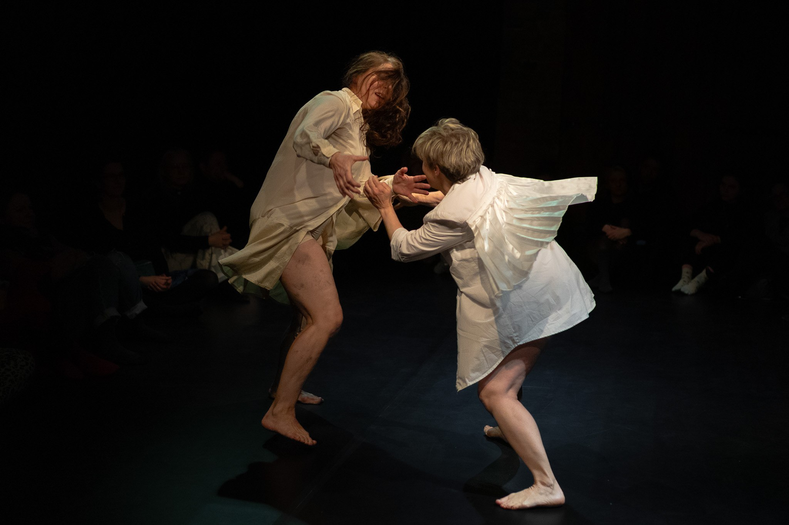

MIKROCIAŁO (Poznań, Polska 2024)

Koncepcja, choreografia: Aniela Kokosza
we współpracy z Olhą Kebas i Agnieszką Noster
Performance: Olha Kebas, Agnieszka Noster, Aniela Kokosza
Głos: Gosia Zagajewska
Kostiumy: Idalia Mantas
we współpracy z Olhą Kebas i Agnieszką Noster
Performance: Olha Kebas, Agnieszka Noster, Aniela Kokosza
Głos: Gosia Zagajewska
Kostiumy: Idalia Mantas
„MIKROCIAŁO” - performance ciał. O kobiecym ciele, o
dojrzałej kobiecości, o odchodzeniu, przychodzeniu, o zmianie. Trochę na sentymentalnie i smutno,
trochę nie... Działamy cieleśnie, z uważnością na detale. Tworzymy z ciał ruchome rzeźby i obrazy.
Czasem pojawiają się dźwięki i słowa, niewiele. Używamy ruchu z codzienności, przetworzonego przez
doświadczenie tańczących ciał. Bierzemy z historii, odczuć i myśli.
Spektakl traktuje ciało jako przestrzeń. Ciało ją otacza, jest tuż obok. Jest przeźroczyste, powietrzne, jest przezroczystą odległością. Pojemne, rozległe, przenika, oddycha. Przestrzeń i powietrze łączą, ”mylą się ze sobą”. Ciało jest przestrzenią, substancją doświadczeń, miejscem zapełnionym duchem. To przestrzeń, która sprzyja.
Performerki dzielą się spojrzeniem na potencjał ciała zmieniającego się z wiekiem. W działaniach performatywnych wzmacniają i gruntują poczucie sprawczości, osadzenia i kontroli.
W spektaklu towarzyszą nam kokony sensoryczne Intibag.
Aniela Kokosza - performerka, choreografka pedagożka, choreoterapeutka. Pracuje jako twórczyni niezależna, działając na pograniczu tańca, sztuk performatywnych i nauk o ciele.
Olha Kebas – performerka, tancerka, choreografka, badaczka i wykładowczyni tańca współczesnego, kuratorka i organizatorka wydarzeń kulturalnych. Pochodzi z Kijowa.
Agnieszka Noster - tancerka, choreografka, magister sztuki, absolwentka Uniwersytetu Artystycznego w Poznaniu, Choreografię studiowała na Akademii Muzycznej w Łodzi.
Gosia Zagajewska - wokalistka i poetka. Współtworzyła Warsaw Improvisers Orchestra. Wydała albumy z zespołami Tuleje, Voice Act, Goutte, Szpety, Casting Lots. Koncertowała w Polsce, Czechach, Słowacji, Niemczech i Wielkiej Brytanii.
Spektakl traktuje ciało jako przestrzeń. Ciało ją otacza, jest tuż obok. Jest przeźroczyste, powietrzne, jest przezroczystą odległością. Pojemne, rozległe, przenika, oddycha. Przestrzeń i powietrze łączą, ”mylą się ze sobą”. Ciało jest przestrzenią, substancją doświadczeń, miejscem zapełnionym duchem. To przestrzeń, która sprzyja.
Performerki dzielą się spojrzeniem na potencjał ciała zmieniającego się z wiekiem. W działaniach performatywnych wzmacniają i gruntują poczucie sprawczości, osadzenia i kontroli.
W spektaklu towarzyszą nam kokony sensoryczne Intibag.
Aniela Kokosza - performerka, choreografka pedagożka, choreoterapeutka. Pracuje jako twórczyni niezależna, działając na pograniczu tańca, sztuk performatywnych i nauk o ciele.
Olha Kebas – performerka, tancerka, choreografka, badaczka i wykładowczyni tańca współczesnego, kuratorka i organizatorka wydarzeń kulturalnych. Pochodzi z Kijowa.
Agnieszka Noster - tancerka, choreografka, magister sztuki, absolwentka Uniwersytetu Artystycznego w Poznaniu, Choreografię studiowała na Akademii Muzycznej w Łodzi.
Gosia Zagajewska - wokalistka i poetka. Współtworzyła Warsaw Improvisers Orchestra. Wydała albumy z zespołami Tuleje, Voice Act, Goutte, Szpety, Casting Lots. Koncertowała w Polsce, Czechach, Słowacji, Niemczech i Wielkiej Brytanii.